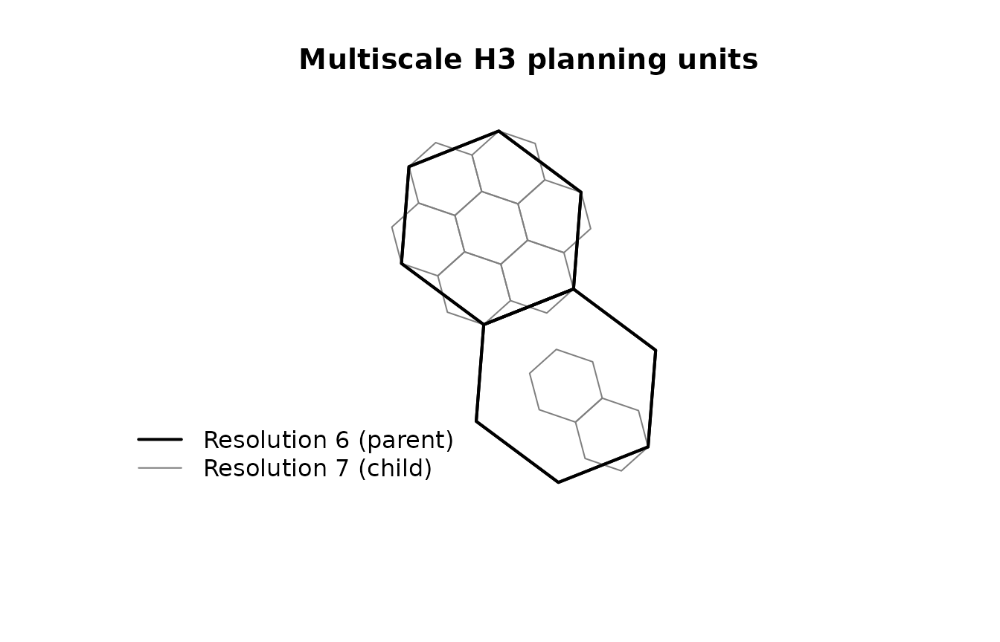
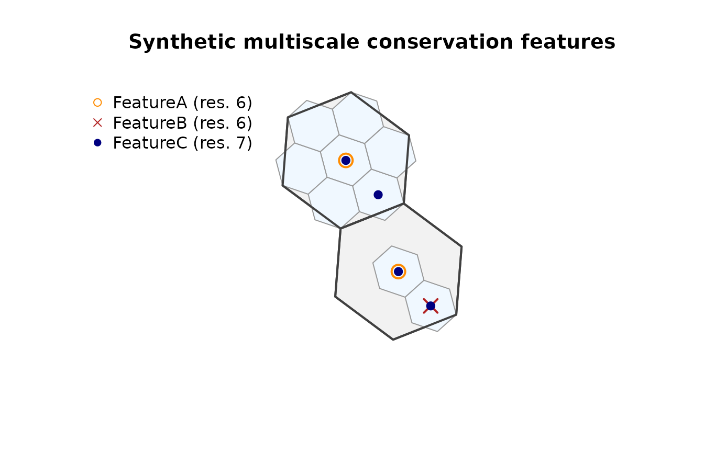
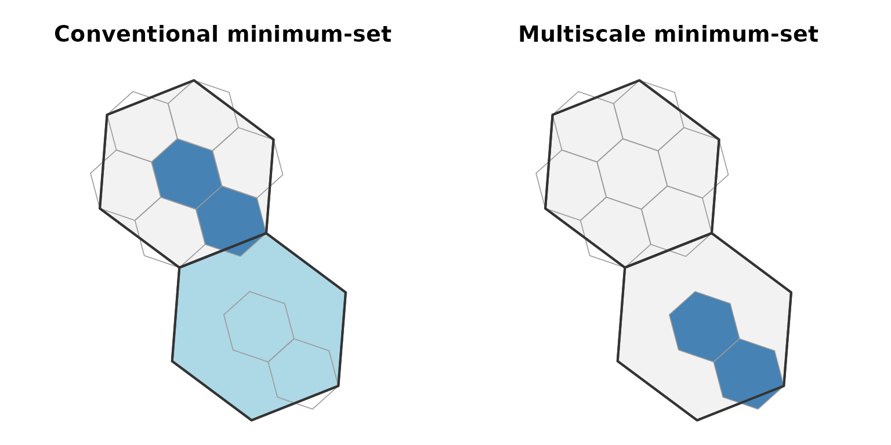

Multiscale SCP workflow example
Pablo Merlo
2026-11-22
MultiscaleSCP_workflow_vignette.RmdOverview
MultiscaleSCP extends prioritizr to
support systematic conservation planning with hierarchical planning
units represented at more than one spatial resolution.
The package uses the H3 hierarchical grid developed by Uber. H3 divides the Earth into nested hexagonal cells at discrete resolutions. Each cell has a unique ID, and finer cells can be linked explicitly to their coarser ancestors.
This hierarchy allows MultiscaleSCP to connect planning decisions across spatial scales. The package includes tools for building parent–child relationships, cross-scale connectivity, multiscale scoring and evaluation, and a multiscale minimum-set formulation.
The multiscale minimum-set formulation allows planning units selected at different H3 resolutions to contribute toward the same conservation feature targets. Costs and feature representation are evaluated consistently across the nested planning-unit hierarchy so that shared spatial contributions are counted once.
Purpose of this vignette
This vignette demonstrates the main multiscale optimization workflow using a small synthetic H3 example.
We use two resolution-6 parent planning units. One parent contains its complete set of seven resolution-7 children, whereas the second contains only two of its resolution-7 children. Three conservation features are represented at different scales:
- one resolution-6 feature occurs in both parents;
- one resolution-6 feature occurs only in one of the parent cells; and
- one resolution-7 feature occurs in two children of each parent.
This example illustrates feature loading, preparation of multiscale objective data, conventional and multiscale minimum-set optimization, solution evaluation, and optional cross-scale connectivity.
Object flow
A typical optimization workflow follows this structure:
Define the planning area and H3 resolutions
↓
Create H3 planning units
↓
build_h3_maps()
↓
load_multiscale_feature()
↓
multiscale_feature_cols()
↓
build_multiscale_objective_data()
↓
prioritizr::problem()
↓
add_multiscale_min_set()
↓
[optional cross-scale connectivity]
build_multiscale_connectivity_matrix()
add_multiscale_connectivity_penalties()
↓
solve()
↓
eval_multiscale_atom_solution()workflow example
We first create two resolution-6 H3 parents. The first has all seven of its resolution-7 children available as planning units. The second has only two children available, so part of that parent remains represented only at the coarser resolution.
seed <- "87182e586ffffff"
grandparent <- h3jsr::get_parent(seed, 5L, simple = TRUE)
parents <- h3jsr::get_children(grandparent, 6L, simple = TRUE)
parents <- sort(as.character(unlist(parents, use.names = FALSE)))[1:2]
parent_full <- parents[1]
parent_partial <- parents[2]
# get the seven children for the first parent.
children_full <- h3jsr::get_children(parent_full, 7L, simple = TRUE)
children_full <- sort(as.character(unlist(children_full, use.names = FALSE)))
# Only two available children for the second parent.
children_partial_all <- h3jsr::get_children(parent_partial, 7L, simple = TRUE)
children_partial_all <- sort(as.character(unlist(children_partial_all, use.names = FALSE)))
children_partial <- children_partial_all[1:2]
h3_vec <- c(parent_full,children_full,parent_partial,children_partial)
pu <- h3jsr::cell_to_polygon(h3_vec, simple = FALSE)
pu <- pu[match(h3_vec, pu$h3_address), ]
pu <- sf::st_transform(pu, 3857)
pu$res <- c(6L,rep(7L, length(children_full)),6L,rep(7L, length(children_partial)))
# Synthetic additive costs.
pu$cost <- c(14,rep(2, length(children_full)),14,rep(2, length(children_partial)))
maps <- build_h3_maps(pu,res_levels = c(6L, 7L))
knitr::kable(sf::st_drop_geometry(pu)[, c("h3_address", "res", "cost")])| h3_address | res | cost |
|---|---|---|
| 86182e587ffffff | 6 | 14 |
| 87182e580ffffff | 7 | 2 |
| 87182e581ffffff | 7 | 2 |
| 87182e582ffffff | 7 | 2 |
| 87182e583ffffff | 7 | 2 |
| 87182e584ffffff | 7 | 2 |
| 87182e585ffffff | 7 | 2 |
| 87182e586ffffff | 7 | 2 |
| 86182e58fffffff | 6 | 14 |
| 87182e588ffffff | 7 | 2 |
| 87182e589ffffff | 7 | 2 |

H3 planning units at resolutions 6 and 7.
The h3_address column supplied by H3 is the
planning-unit ID used throughout the workflow.
build_h3_maps() identifies the parent–child relationships
among the H3 planning units and stores the hierarchy used by the
multiscale functions.
The first parent has seven children, each costing 2 units, so its complete footprint costs 14. The second parent contains only two of its possible resolution-7 children.
Load conservation features at different resolutions
We now create three synthetic features.
FeatureA is reported at resolution 6 and occurs in both
parents. FeatureB is also reported at resolution 6 but
occurs only in one of the parent cells (the one with only 2 children).
Finally, FeatureC is loaded at resolution 7 and occurs in
two children under each parent.
full_parent_row <- match(parent_full, pu$h3_address)
partial_parent_row <- match(parent_partial, pu$h3_address)
full_child_rows <- match(children_full, pu$h3_address)
partial_child_rows <- match(children_partial, pu$h3_address)
# The common resolution-6 feature occurs once below each parent.
common_rows <- c(
full_child_rows[1],
partial_child_rows[1]
)
feature_common <- sf::st_sf(
geometry = sf::st_point_on_surface(
sf::st_geometry(pu)[common_rows]
)
)
# The unique resolution-6 feature occurs only below the partial parent.
# Put it inside its second available child.
feature_unique <- sf::st_sf(
geometry = sf::st_point_on_surface(
sf::st_geometry(pu)[partial_child_rows[2]]
)
)
# Fine feature: two occurrences below each parent.
fine_rows <- c(full_child_rows[1:2],partial_child_rows)
feature_fine <- sf::st_sf(geometry = sf::st_point_on_surface(
sf::st_geometry(pu)[fine_rows]))
pu <- load_multiscale_feature(pu = pu,source = feature_common,
native_res = 6L,maps = maps,feature_name = "FeatureA")
pu <- load_multiscale_feature(pu = pu,source = feature_unique,
native_res = 6L,maps = maps,feature_name = "FeatureB")
pu <- load_multiscale_feature(pu = pu,source = feature_fine,
native_res = 7L,maps = maps,feature_name = "FeatureC")
feature_cols <- multiscale_feature_cols(pu)
knitr::kable(sf::st_drop_geometry(pu)[,c("h3_address","res","cost","r6_FeatureA","msopt_FeatureA")])| h3_address | res | cost | r6_FeatureA | msopt_FeatureA |
|---|---|---|---|---|
| 86182e587ffffff | 6 | 14 | 1 | 1 |
| 87182e580ffffff | 7 | 2 | 0 | 1 |
| 87182e581ffffff | 7 | 2 | 0 | 0 |
| 87182e582ffffff | 7 | 2 | 0 | 0 |
| 87182e583ffffff | 7 | 2 | 0 | 0 |
| 87182e584ffffff | 7 | 2 | 0 | 0 |
| 87182e585ffffff | 7 | 2 | 0 | 0 |
| 87182e586ffffff | 7 | 2 | 0 | 0 |
| 86182e58fffffff | 6 | 14 | 1 | 1 |
| 87182e588ffffff | 7 | 2 | 0 | 1 |
| 87182e589ffffff | 7 | 2 | 0 | 0 |
load_multiscale_feature() creates two representations of
each feature. The native columns are named using r followed
by the feature’s native H3 resolution, for example
r6_FeatureA or r7_FeatureC. These columns
contain the amount used to identify the feature at its reporting
resolution. The corresponding multiscale column contains feature amounts
across the H3 hierarchy, allowing planning units at different
resolutions to contribute to the same feature during optimization. These
columns use the msopt_ prefix by default.
multiscale_feature_cols() identifies the native feature
columns and their corresponding msopt_ columns so they can
be used consistently in the multiscale optimization.
Where H3 children are present, finer-resolution amounts are
aggregated upward to their parents, and if only part of a parent is
represented by finer planning units,
load_multiscale_feature() also extracts feature amounts
from the uncovered parent remainder before aggregating upward.
Thus the user can provide each feature at its appropriate spatial resolution without manually copying feature amounts between resolutions.

Prepare data for multiscale optimization
Once the hierarchy, costs, and features have been prepared, the
multiscale data only need to be constructed once for a given problem,
using the function build_multiscale_objective_data()
ms_data <- build_multiscale_objective_data(pu = pu,maps = maps,feature_cols = feature_cols,
native_cols = names(feature_cols),cost_col = "cost")The prepared data allow costs and feature representation to be combined across nested planning-unit resolutions. Internally, overlapping planning-unit footprints are divided into non-overlapping accounting units (atoms) so that shared spatial contributions are represented once.
For the complete parent in this example, the seven children form the complete H3 partition. Its footprint is therefore represented by seven child atoms. The second parent contains only two available children. It therefore contains three atoms: the two child atoms and an additional remainder atom representing the rest of the parent.
Selecting a parent activates every atom contained in its footprint. Selecting one of its children activates only the corresponding child atom. If a parent and one of its children are both selected, their shared atom is still counted only once.
This same atom structure is used for both conservation cost and feature representation.
Compare conventional and multiscale minimum-set objectives
For this example we will require:
- 50% of
FeatureA: one of its two occurrences; - 100% of
FeatureB: its single occurrence in the partial parent; and - 50% of
FeatureC: two of its four occurrences.
targets <- c(r6_FeatureA = 1/2, r6_FeatureB = 1, r7_FeatureC = 1/2)
# Keep the same order used by the problem and atom data.
targets <- targets[names(feature_cols)]
# Conventional minimum-set formulation.
p_classic <- prioritizr::problem(pu,features = names(feature_cols),cost_column = "cost") |>
prioritizr::add_min_set_objective() |>
prioritizr::add_relative_targets(targets) |>
prioritizr::add_binary_decisions()
# Multiscale minimum-set formulation.
p_atom <- prioritizr::problem(pu,features = names(feature_cols),cost_column = "cost") |>
add_multiscale_min_set(data = ms_data,targets = targets) |>
prioritizr::add_binary_decisions()add_multiscale_min_set() adds the multiscale minimum-set
objective and relative representation targets to the
prioritizr problem.
s_classic <- solve(prioritizr::add_highs_solver(p_classic,gap = 0,verbose = FALSE))
s_atom <- solve(prioritizr::add_highs_solver(p_atom,gap = 0,verbose = FALSE))
classic_eval <- eval_multiscale_atom_solution(s_classic,"solution_1",ms_data,targets)
atom_eval <- eval_multiscale_atom_solution(s_atom,"solution_1",ms_data,targets)
comparison <- data.frame(
Approach = c("Conventional minimum-set","Multiscale atom minimum-set"),
Selected_PUs = c(sum(s_classic$solution_1),sum(s_atom$solution_1)),
Cost = c(classic_eval$deduplicated_cost,atom_eval$deduplicated_cost),
FeatureA_held = c(classic_eval$relative_held["r6_FeatureA"],
atom_eval$relative_held["r6_FeatureA"]),
FeatureB_held = c(classic_eval$relative_held["r6_FeatureB"],
atom_eval$relative_held["r6_FeatureB"]),
FeatureC_held = c(classic_eval$relative_held["r7_FeatureC"],
atom_eval$relative_held["r7_FeatureC"]),
Targets_met = c(all(classic_eval$target_met),all(atom_eval$target_met)))
knitr::kable(comparison,digits = 2,
col.names = c("Approach","Selected PUs","Cost", "Feature A held","Feature B held","Feature C held","All targets met"))| Approach | Selected PUs | Cost | Feature A held | Feature B held | Feature C held | All targets met |
|---|---|---|---|---|---|---|
| Conventional minimum-set | 3 | 18 | 1.0 | 1 | 1.0 | TRUE |
| Multiscale atom minimum-set | 2 | 4 | 0.5 | 1 | 0.5 | TRUE |
eval_multiscale_atom_solution() evaluates a solution
using the same atom-based accounting, reporting its deduplicated cost,
feature representation, and whether the representation targets were
achieved.
Both the conventional minimum-set and the multiscale formulation achieved all feature targets, but the multiscale solution did so at lower cost.
The conventional problem must select the partial parent because this
is the only native resolution-6 planning unit containing
FeatureB. However, the selected parent receives no
conventional credit for the resolution-7 FeatureC feature.
The conventional formulation must therefore select two additional
resolution-7 planning units. All four fine-scale occurrences have the
same cost and feature amount, and the conventional formulation does not
distinguish whether those two cells occur inside the already selected
parent or below the other parent. Also, the resolution-6 features can
only be represented conventionally by selecting an entire resolution-6
parent cell.
The multiscale formulation can use feature information across the H3
hierarchy. The first child of the partial parent contains
FeatureA and FeatureC, while the second
contains FeatureB and FeatureC. Selecting
these two children therefore satisfies the targets for all three
features at a total cost of 4.
The conventional formulation cannot use this cross-resolution information when choosing among resolution-7 cells because the coarse-resolution features are represented only in their native resolution-6 columns.
Spatial comparison of the solutions
The maps below show the planning-unit decisions returned by the two formulations.
plot_solution <- function(x, title) {
parent_rows <- x$res == 6L
child_rows <- x$res == 7L
parent_selected <- x$solution_1[parent_rows] == 1
child_selected <- x$solution_1[child_rows] == 1
plot(sf::st_geometry(x[parent_rows, ]),
col = ifelse(parent_selected, "lightblue", "grey95"),border = "grey30",
lwd = 2,main = title)
plot(sf::st_geometry(x[child_rows, ]),
add = TRUE,col = ifelse(child_selected, "steelblue", NA),
border = "grey60",lwd = 0.8)
plot(sf::st_geometry(x[parent_rows, ]),add = TRUE,col = NA,border = "grey20",lwd = 2)
}
op <- par(mfrow = c(1, 2),mar = c(0.5, 0.5, 3, 0.5))
plot_solution(s_classic,"Conventional minimum-set")
plot_solution(s_atom,"Multiscale minimum-set")
The dark (blue) cells are the selected planning units in the solution.
Optional coordination across scales
Connectivity penalties can encourage coordinated selection of linked planning units across resolutions.
build_multiscale_connectivity_matrix() identifies the H3
parent–child links between planning units and stores them in a sparse
connectivity matrix.
add_multiscale_connectivity_penalties() adds these
cross-resolution links to a prioritizr problem as a penalty
term. The penalty value controls how strongly the
optimization favours solutions that maintain these parent–child
connections.
vertical <- build_multiscale_connectivity_matrix(
maps,
symmetric = TRUE
)
vertical
#> 11 x 11 sparse Matrix of class "dgCMatrix"
#>
#> [1,] . 1 1 1 1 1 1 1 . . .
#> [2,] 1 . . . . . . . . . .
#> [3,] 1 . . . . . . . . . .
#> [4,] 1 . . . . . . . . . .
#> [5,] 1 . . . . . . . . . .
#> [6,] 1 . . . . . . . . . .
#> [7,] 1 . . . . . . . . . .
#> [8,] 1 . . . . . . . . . .
#> [9,] . . . . . . . . . 1 1
#> [10,] . . . . . . . . 1 . .
#> [11,] . . . . . . . . 1 . .The connectivity matrix can then be added to a multiscale optimization problem as follows:
p_connected <- prioritizr::problem(pu,features = names(feature_cols),cost_column = "cost") |>
add_multiscale_min_set(data = ms_data,targets = targets) |>
add_multiscale_connectivity_penalties(penalty = 0.05, data = vertical) |>
prioritizr::add_binary_decisions() |>
prioritizr::add_highs_solver(gap = 0,verbose = FALSE)
# s_connected <- solve(p_connected)